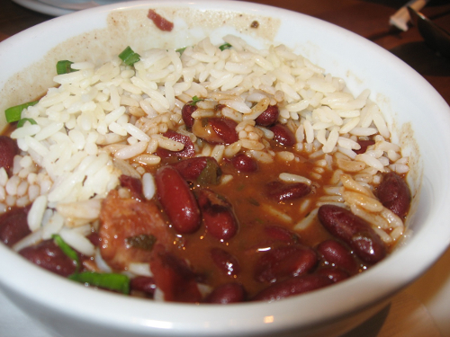

A light, crispy pancake made of chickpea flour and seasoned with rosemary and black pepper.
The classic chickpea dip. Ours has sriacha and lots of lemon. Served with pita and oil-cured black olives.
Creamy cannelini beans mashed with olive oil, oregano, and lots of black pepper. Served with crostini and piave cheese.Indian red lentil soup seasoned with curry. Served with flakey paratha bread.
The classic. Deep fried and crispy, loaded with cumin.
White beans with rosemary, crisp on the outside and creamy in the middle. Served with house pickles.
Simmered in Flying Fish Oyster Stout, these spicy black beans are earthy and slightly sweet. Served with cornbread.
The New Orleans classic, cooked with pickled pork and creole spices.